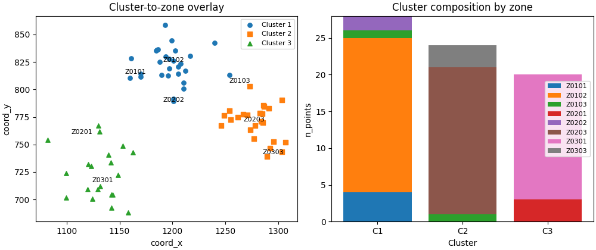

Note
Go to the end to download the full example code.
Tag hotspot clusters with district Zone IDs#
This example teaches the workflow idea behind GeoPrior’s
tag-clusters-with-zones utility.
Unlike the plotting scripts, this command is a support-layer builder. It links cluster artifacts back to district-style zone IDs so later tables, maps, and summaries can reason about clusters in a zone-aware way.
Why this matters#
A hotspot cluster is often useful geometrically, but later reporting usually needs one more layer of structure:
which zone each cluster point belongs to,
how many points from each cluster fall in each zone,
and which zones dominate a given cluster.
This builder sits exactly at that bridge between: - cluster outputs, - and zone-based summaries.
Imports#
The real script body has not yet been uploaded here, so this lesson page mirrors the confirmed purpose of the command:
cluster points in,
zone assignments in,
tagged cluster table out.
The page is therefore written as a faithful workflow lesson around the confirmed command purpose and naming.
from __future__ import annotations
import tempfile
from pathlib import Path
import matplotlib.pyplot as plt
import numpy as np
import pandas as pd
Build a compact synthetic district assignment table#
This table mirrors the kind of artifact produced by
make_district_grid.py when --assign-samples is used.
Each sample already has:
city
sample_idx
coord_x
coord_y
zone_id
zone_row
zone_col
That is the natural join key for tagging cluster outputs later.
rng = np.random.default_rng(29)
n1, n2, n3 = 28, 24, 20
n_total = n1 + n2 + n3
x1 = rng.normal(1200.0, 18.0, size=n1)
y1 = rng.normal(820.0, 14.0, size=n1)
x2 = rng.normal(1275.0, 16.0, size=n2)
y2 = rng.normal(770.0, 15.0, size=n2)
x3 = rng.normal(1135.0, 20.0, size=n3)
y3 = rng.normal(725.0, 18.0, size=n3)
coord_x = np.concatenate([x1, x2, x3])
coord_y = np.concatenate([y1, y2, y3])
sample_idx = np.arange(n_total, dtype=int)
# A small hand-made zone layout for the lesson.
zone_id = []
zone_row = []
zone_col = []
for x, y in zip(coord_x, coord_y, strict=False):
if x < 1170:
col = 0
elif x < 1240:
col = 1
else:
col = 2
if y >= 800:
row = 0
elif y >= 750:
row = 1
else:
row = 2
zone_row.append(row)
zone_col.append(col)
zone_id.append(f"Z{row+1:02d}{col+1:02d}")
assign_df = pd.DataFrame(
{
"city": "Nansha",
"sample_idx": sample_idx,
"coord_x": coord_x.astype(float),
"coord_y": coord_y.astype(float),
"zone_id": zone_id,
"zone_row": zone_row,
"zone_col": zone_col,
}
)
print("Assignment preview")
print(assign_df.head(10).to_string(index=False))
Assignment preview
city sample_idx coord_x coord_y zone_id zone_row zone_col
Nansha 0 1192.946343 858.441009 Z0102 0 1
Nansha 1 1200.898567 826.248837 Z0102 0 1
Nansha 2 1197.026577 818.876053 Z0102 0 1
Nansha 3 1196.976551 827.799244 Z0102 0 1
Nansha 4 1201.127086 791.506083 Z0202 1 1
Nansha 5 1195.937201 812.571500 Z0102 0 1
Nansha 6 1205.344610 814.324138 Z0102 0 1
Nansha 7 1199.119929 844.296990 Z0102 0 1
Nansha 8 1210.225254 806.122635 Z0102 0 1
Nansha 9 1188.173421 825.082291 Z0102 0 1
Build a compact synthetic cluster artifact#
The confirmed purpose of the command is to assign hotspot clusters to zone IDs.
For the lesson, we use a point-level cluster table that already has:
city
sample_idx
cluster_id
and some optional cluster-side metadata.
This makes the workflow explicit and keeps the lesson concrete.
cluster_id = np.empty(n_total, dtype=int)
cluster_id[:n1] = 1
cluster_id[n1 : n1 + n2] = 2
cluster_id[n1 + n2 :] = 3
severity = np.concatenate(
[
rng.normal(18.0, 2.5, size=n1),
rng.normal(14.0, 2.0, size=n2),
rng.normal(11.0, 1.7, size=n3),
]
)
cluster_df = pd.DataFrame(
{
"city": "Nansha",
"sample_idx": sample_idx,
"cluster_id": cluster_id,
"cluster_metric": severity.astype(float),
}
)
print("")
print("Cluster preview")
print(cluster_df.head(10).to_string(index=False))
Cluster preview
city sample_idx cluster_id cluster_metric
Nansha 0 1 16.123563
Nansha 1 1 17.410233
Nansha 2 1 17.109160
Nansha 3 1 20.778934
Nansha 4 1 18.028268
Nansha 5 1 14.825476
Nansha 6 1 23.993863
Nansha 7 1 16.402021
Nansha 8 1 13.824007
Nansha 9 1 19.475623
Write the lesson inputs#
The production script is intended as a builder between cluster artifacts and zone-aware artifacts, so the lesson also uses files.
tmp_dir = Path(
tempfile.mkdtemp(prefix="gp_sg_clusters_with_zones_")
)
assign_csv = tmp_dir / "district_assignments_nansha.csv"
cluster_csv = tmp_dir / "hotspot_clusters_nansha.csv"
assign_df.to_csv(assign_csv, index=False)
cluster_df.to_csv(cluster_csv, index=False)
print("")
print("Input files")
print(" -", assign_csv.name)
print(" -", cluster_csv.name)
Input files
- district_assignments_nansha.csv
- hotspot_clusters_nansha.csv
Build the tagged cluster artifact#
Because the actual script body is not yet available here, we mirror the confirmed command purpose with the core join that such a builder must perform:
join clusters to assignments by (city, sample_idx),
attach zone columns,
and write a tagged cluster table.
tagged = cluster_df.merge(
assign_df,
on=["city", "sample_idx"],
how="left",
validate="one_to_one",
)
tagged_csv = tmp_dir / "clusters_with_zones_nansha.csv"
tagged.to_csv(tagged_csv, index=False)
print("")
print("Tagged cluster preview")
print(tagged.head(12).to_string(index=False))
Tagged cluster preview
city sample_idx cluster_id cluster_metric coord_x coord_y zone_id zone_row zone_col
Nansha 0 1 16.123563 1192.946343 858.441009 Z0102 0 1
Nansha 1 1 17.410233 1200.898567 826.248837 Z0102 0 1
Nansha 2 1 17.109160 1197.026577 818.876053 Z0102 0 1
Nansha 3 1 20.778934 1196.976551 827.799244 Z0102 0 1
Nansha 4 1 18.028268 1201.127086 791.506083 Z0202 1 1
Nansha 5 1 14.825476 1195.937201 812.571500 Z0102 0 1
Nansha 6 1 23.993863 1205.344610 814.324138 Z0102 0 1
Nansha 7 1 16.402021 1199.119929 844.296990 Z0102 0 1
Nansha 8 1 13.824007 1210.225254 806.122635 Z0102 0 1
Nansha 9 1 19.475623 1188.173421 825.082291 Z0102 0 1
Nansha 10 1 18.105745 1193.508120 830.137433 Z0102 0 1
Nansha 11 1 19.564152 1184.590505 835.124415 Z0102 0 1
Build one compact group summary#
Once clusters are zone-tagged, a very natural next artifact is a cluster × zone count table.
zone_counts = (
tagged.groupby(["cluster_id", "zone_id"], as_index=False)
.size()
.rename(columns={"size": "n_points"})
.sort_values(["cluster_id", "n_points"], ascending=[True, False])
)
print("")
print("Cluster × zone counts")
print(zone_counts.to_string(index=False))
Cluster × zone counts
cluster_id zone_id n_points
1 Z0102 21
1 Z0101 4
1 Z0202 2
1 Z0103 1
2 Z0203 20
2 Z0303 3
2 Z0103 1
3 Z0301 17
3 Z0201 3
Identify a dominant zone per cluster#
This is often the first practical interpretation step:
for each cluster,
which zone contains the largest share of its points?
dominant = (
zone_counts.sort_values(
["cluster_id", "n_points", "zone_id"],
ascending=[True, False, True],
)
.groupby("cluster_id", as_index=False)
.first()
.rename(columns={"zone_id": "dominant_zone"})
)
print("")
print("Dominant zone per cluster")
print(dominant.to_string(index=False))
Dominant zone per cluster
cluster_id dominant_zone n_points
1 Z0102 21
2 Z0203 20
3 Z0301 17
Build one compact visual preview#
This preview is not part of the production builder itself. It is a teaching aid for the gallery page.
- Left:
point-level cluster-to-zone overlay.
- Right:
stacked counts by cluster and zone.
fig, axes = plt.subplots(
1,
2,
figsize=(10.0, 4.2),
constrained_layout=True,
)
# Cluster-to-zone overlay
ax = axes[0]
markers = {1: "o", 2: "s", 3: "^"}
for cid in sorted(tagged["cluster_id"].unique()):
sub = tagged.loc[tagged["cluster_id"] == cid]
ax.scatter(
sub["coord_x"].to_numpy(float),
sub["coord_y"].to_numpy(float),
marker=markers[int(cid)],
s=28,
label=f"Cluster {int(cid)}",
)
for _, row in (
tagged.groupby("zone_id", as_index=False)[["coord_x", "coord_y"]]
.mean()
.iterrows()
):
ax.text(
float(row["coord_x"]),
float(row["coord_y"]),
str(row["zone_id"]),
ha="center",
va="center",
fontsize=8,
)
ax.set_title("Cluster-to-zone overlay")
ax.set_xlabel("coord_x")
ax.set_ylabel("coord_y")
ax.legend(fontsize=8)
# Stacked counts
ax = axes[1]
wide = zone_counts.pivot(
index="cluster_id",
columns="zone_id",
values="n_points",
).fillna(0.0)
bottom = np.zeros(len(wide), dtype=float)
x = np.arange(len(wide), dtype=float)
for z in wide.columns:
vals = wide[z].to_numpy(float)
ax.bar(x, vals, bottom=bottom, label=str(z))
bottom += vals
ax.set_title("Cluster composition by zone")
ax.set_xlabel("Cluster")
ax.set_ylabel("n_points")
ax.set_xticks(x)
ax.set_xticklabels([f"C{int(i)}" for i in wide.index])
ax.legend(fontsize=8)

<matplotlib.legend.Legend object at 0x000002952D8578E0>
Learn how to read the tagged artifact#
The tagged table is a point-level bridge artifact.
Its practical reading order is:
identify the cluster columns,
inspect the appended zone columns,
group by cluster and zone when you need a summary,
compute a dominant zone only if you want a single label per cluster.
In other words:
the tagged table preserves the point-level detail,
the grouped tables compress that detail for reporting.
Why tagging clusters with zones is useful#
Cluster IDs are useful for contiguous or coherent hotspot groups, but they are not always easy to interpret in a reporting workflow.
Zone IDs help translate those clusters into a support layer that is:
stable,
named,
and compatible with district-style summaries.
That is often the step that makes later hotspot analytics much easier to explain.
Why this page belongs after make_exposure.py#
A natural support-layer workflow is:
build the boundary,
build the district grid,
assign samples to zones,
build exposure if needed,
tag cluster artifacts with zone IDs.
So this lesson is the clean endpoint of the support-layer mini-chain.
Command-line version#
The exact public names are confirmed:
Legacy dispatcher:
python -m scripts tag-clusters-with-zones ...
Modern CLI:
geoprior build clusters-with-zones ...
The full flag set could not be verified here because the script body itself was not uploaded in this conversation. Once that file is in view, this lesson can be tightened to the exact CLI signature while keeping the same workflow structure.
Total running time of the script: (0 minutes 1.167 seconds)